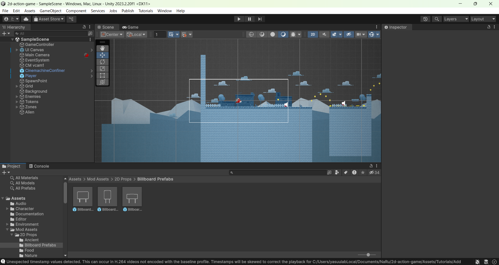
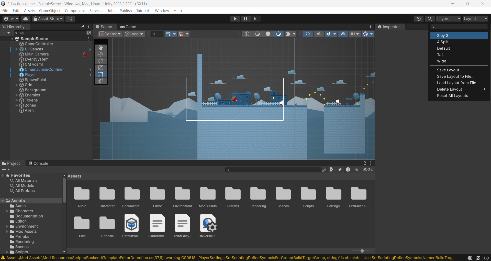
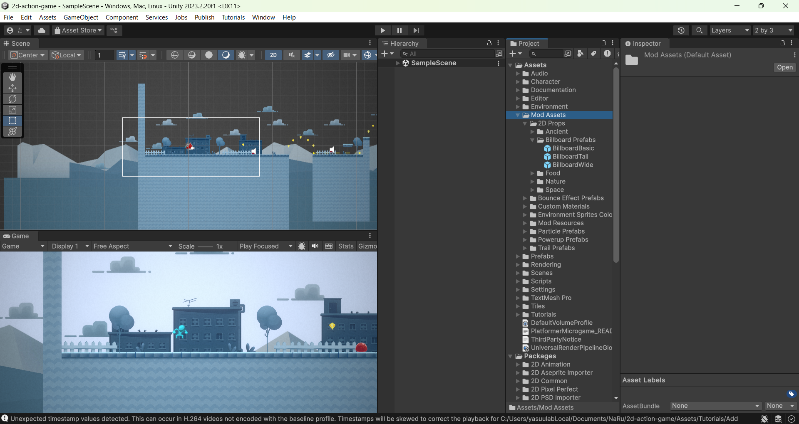
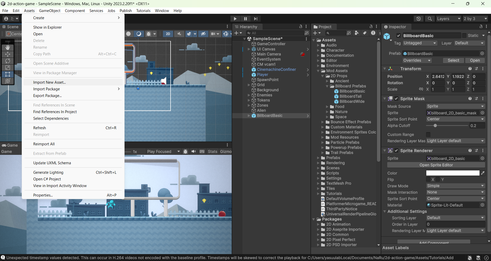
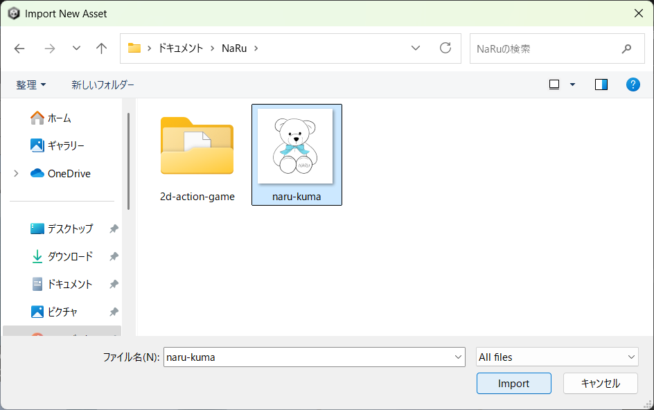
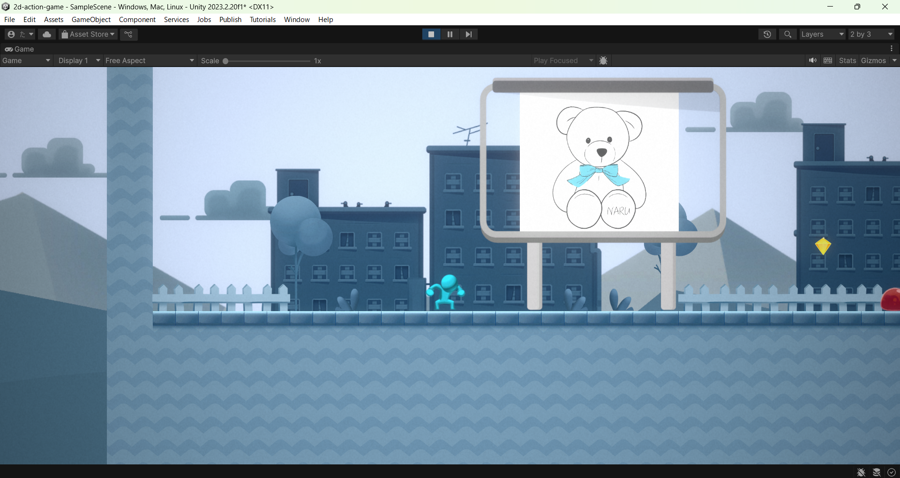
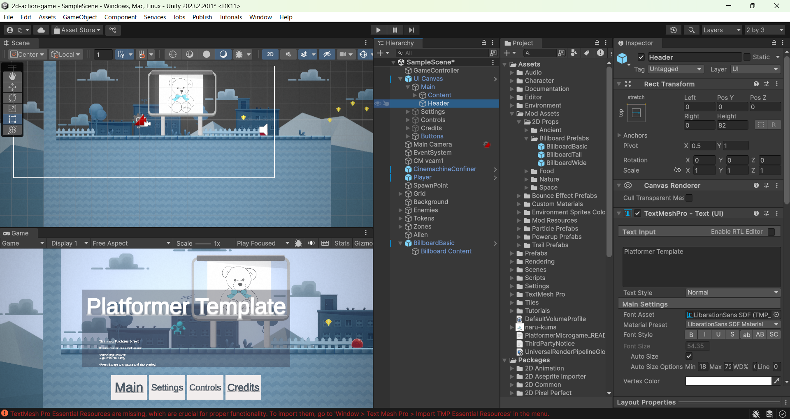

ビルボードとゲーム名 〜自分の画像とタイトルでオリジナルゲームにしよう〜
🎯 この章でできるようになること
- Unityエディタのレイアウトを「2 by 3」に変更できる
- ビルボード（看板）のプレハブをワールドに追加できる
- 好きな画像をインポートして、ビルボードに表示できる
- Rectツール（
Tキー）で画像の大きさと位置を調整できる - ゲームのタイトルを変えて、一時停止画面で確認できる
- （＋α）タイトルのフォントを変えられる
前回は Platformer Microgame をプロジェクトに取り込んで、実際に遊んでみるところまでやりました。
今日からいよいよ「改造」のスタート！
ゲームの中に自分の画像の看板を立てて、自分だけのタイトルを付けます。
まずはUnity Hubから前回のプロジェクトを開いて、ゲームの画面が表示されるか確認しよう。
うまく開けない人は第1章の手順を見直してみてね。
2-1. レイアウトを「2 by 3」に変えよう
改造作業に入る前に、Unityエディタの画面の並び（レイアウト）を作業しやすい形に変えます。
SceneビューとGameビューが縦に並ぶ「2 by 3」にすると、編集中の世界（Scene）と実際のゲーム画面（Game）を同時に見ながら作業できるようになります。
いつでも右上の「Layout」ボタンから切り替えられて、ゲームの中身には影響しない。
自分が作業しやすい並びを選んでOK。
Unityエディタの右上にある「Layout」をクリックします。

リストから「2 by 3」を選びましょう。
画面の並びがガラッと変わって、左にSceneビューとGameビューが縦に並ぶ形になります。

💡 この教科書では「2 by 3」で進めるけど、慣れてきたらお好みのレイアウトで大丈夫だよ。
🚨 超重要ルール: 再生中（▶）の変更は保存されない
▶（再生ボタン）を押してPlayモードになっている間にワールドやInspectorを変更しても、停止したとたん全部元に戻ります。
せっかくの改造が消えてしまわないように、編集はかならず■（停止）してから行おう。
Playモード中はGameビューのまわりの色が変わるので、「今どっちのモードか」をいつも意識してね。
2-2. ビルボード（看板）をワールドに追加しよう
Platformer Microgameには、改造用の素材（Mod Assets）としてビルボード（Billboard）＝立て看板が用意されています。
まずはこの看板をゲームの世界に立ててみよう。
プロジェクトウィンドウからSceneビューへドラッグするだけで、何個でもワールドに置ける。
ビルボードもプレハブとして用意されている。
プロジェクトウィンドウで Mod Assets → 2D Props → Billboard Prefabs の順に開きます。
中にビルボードのプレハブが3つ入っています。

3つのうち好きなものを選んで、Sceneビューにドラッグしてワールドに追加します。
プレイヤーの近くの、見えやすい場所に置くのがおすすめ。
2-3. 好きな画像をインポートしよう
看板に貼る画像を、自分のPCからUnityに取り込みます。
イラスト、風景写真、自分で描いた絵など、好きな画像でOK！
🚨 個人情報に注意！
自分や友だちの顔写真、本名が写っている画像は使わないこと。
作ったゲームはあとで発表したり、人に見せたりすることがあります。
ネットで拾った画像も、勝手に使ってよいものか（フリー素材か）を確認してから使おう。
上部メニューの Assets → Import New Asset... の順に選択します。

開いたウィンドウでインポートしたい画像を選び、「Import」をクリックします。
プロジェクトウィンドウのAssetsの中に画像が追加されれば成功。

キャラも背景も看板の絵も、2Dゲームの見た目はぜんぶスプライトでできている。
今回のプロジェクトは2D用なので、インポートした画像は自動でスプライトとして扱われる。
2-4. 画像をビルボードに貼ろう
ヒエラルキーで、さっき追加した Billboard のGameObjectの左の矢印を開き、子になっている Billboard Content をクリックします。
Inspectorを見ると「Sprite」というフィールドがあります。
2-3でインポートした画像を、プロジェクトウィンドウからInspectorの Sprite フィールドへドラッグします。
看板の中身が自分の画像に変わったら成功！
2-5. Rectツール（Tキー）でサイズを整えよう
画像のサイズによっては、看板のフレームからはみ出すほど大きく表示されることがあります。
そんなときはRect（レクト）ツールの出番。
画像の四隅をつまんで、大きさと位置を自由に調整できます。
ツールバーからRectツールを選択します（キーボードの T を押してもOK）。
Billboard Content を選択した状態で、Sceneビューに表示される四隅のハンドルをドラッグして、フレームに合うように画像を拡大縮小します。
中央をドラッグすると位置を動かせるので、フレームの真ん中に配置しよう。
2-6. 完成形を確認して、保存しよう
ここまでできたら、こんな感じになっているはずです。


Ctrl + S⌘ + S でシーンを保存します。
うっかりUnityを閉じてしまっても大丈夫なように、作業の区切りごとに保存する習慣をつけておくと安心だよ。
2-7. ゲームに名前を付けよう
次は、このゲームに自分だけのタイトルを付けます。
「Platformer Microgame」のままじゃなくて、自分の作品らしい名前にしよう。
ヒエラルキーで UI Canvas → Main → Header の順に開いて選択します。
これがタイトル画面の文字のGameObjectです。

ゲームの世界（ワールド）とは別のレイヤーに描かれるので、カメラが動いても画面の同じ位置に表示され続ける。
Inspectorのテキストフィールドをクリックして、自分のゲーム名を入力します。
変更するとすぐGameビューに反映されます。
タイトル画面は、ゲームプレイ中に一時停止したときだけ表示されます。
▶でPlayモードに入ってから Esc キー（一時停止キー）を押すと、新しいタイトル画面が見られます。
🚨 一時停止中も「Playモードのまま」！
Esc で一時停止していても、UnityはまだPlayモードの中です。
このまま編集を続けると、停止した瞬間に変更が全部消えてしまう！
確認が終わったら、かならず手動でPlayモードを終了（■）してから次の作業をしよう。
タイトルの変更自体は停止してから行い、保存（Ctrl + S⌘ + S）も忘れずに。
2-8. ＋α フォントを変えてみよう
余裕がある人は、タイトルのフォント（文字のデザイン）も変えてみよう。
フォントが変わるだけで、ゲームの雰囲気がガラッと変わるよ。
Header を選択したまま、Inspectorの Font Asset フィールドの横にある丸い切替ボタンをクリックします。
リストから気に入ったフォントを選ぶと、Gameビューにすぐ反映されます。
2-9. 💪 やってみよう
課題1（基本）: ビルボードを3枚立てて「自分のギャラリー」を作ろう
ビルボードのプレハブは3種類あったよね。
画像をあと2枚インポートして、ちがう画像のビルボードを合計3枚、ステージのあちこちに立ててみよう。
もちろん全部、Rectツールでフレームにぴったり合わせてね。
ヒントを見る
手順は 2-2 → 2-3 → 2-4 → 2-5 のくり返し。
2枚目からは、画像のインポート（Assets → Import New Asset...）とプレハブのドラッグを続けてやるだけ。
置く場所に迷ったら、ゴール地点の近くに「おつかれさま」の1枚を置くのも面白いよ。
課題2（応用）: オリジナルタイトルを付けて、一時停止画面で発表しよう
自分のゲームにぴったりのタイトルを考えて設定しよう。
設定できたら▶で再生 → Esc で一時停止して、となりの人にタイトル画面を見せてみよう。
「どんなゲームに改造していきたいか」が伝わる名前だとカッコいい！
ヒントを見る
タイトルに迷ったら、「主人公の名前＋大冒険」「〇〇ダッシュ」「〇〇ランナー」みたいな型にあてはめてみよう。
確認が終わったら、Playモードの終了（■）と保存を忘れずに。
課題3（チャレンジ）: フォントでゲームの世界観を演出しよう
2-8のフォント変更を使って、自分のタイトルにいちばん似合うフォントを探そう。
いくつか切り替えて見比べて、「かわいい系」「ホラー系」「近未来系」など、目指す世界観に合うものを選んでみよう。
ヒントを見る
丸い切替ボタンのリストで、フォントをクリックするたびにGameビューが変わるので、見比べながら選べるよ。
太いフォントは元気な印象、細いフォントは静かな印象になりやすい。
2-10. 🚨 つまずきポイント集
せっかく置いたビルボードやタイトルが消えた！
原因: ▶再生中（Playモード）に変更していた。
Playモード中の変更は、停止した瞬間にすべて元に戻る。
直し方: 消えたものは残念ながら復活しないので、■で停止してからもう一度同じ手順でやり直そう。
Esc の一時停止中もPlayモードのままなので要注意。
画像をSpriteフィールドにドラッグできない・反応しない
原因1: 選択しているのが Billboard（親）で、Billboard Content（子）ではない。
→ ヒエラルキーでBillboardの左の矢印を開いて、Billboard Contentの方を選ぼう。
原因2: 画像がスプライトとして読み込まれていない。
→ プロジェクトウィンドウでその画像を選び、Inspectorの Texture Type が「Sprite (2D and UI)」になっているか確認。
違っていたら変更して「Apply」を押そう。
ドラッグしたビルボードがどこに行ったかわからない
原因: Sceneビューの表示位置から遠い場所にドロップしてしまった。
直し方: ヒエラルキーで Billboard をダブルクリックすると、Sceneビューがそのオブジェクトまでジャンプしてくれる（選択して F キーでもOK）。
そこからRectツールや移動ツールで好きな場所に動かそう。
タイトルを変えたのに、ゲーム画面のどこにも見えない
原因: タイトル画面は一時停止したときだけ表示される仕組みになっている。
ふつうにプレイしている間は出てこない。
直し方: ▶で再生してから Esc キーを押そう。
一時停止画面に新しいタイトルが出てくるはず。
Rectツールのハンドル（四隅の丸）が出てこない
原因1: ツールがRectツール以外になっている。
→ キーボードの T を押すか、ツールバーからRectツールを選び直そう。
原因2: 選択中のオブジェクトが違う。
→ ヒエラルキーで Billboard Content が選ばれているか確認しよう。
💡 15分たっても直らないときは、次の「AIを味方につけよう」の方法で相談してみよう。
2-11. 🤖 AIを味方につけよう
「操作したのに画面が思いどおりにならない」系のトラブルは、状況を言葉にして伝えるとAIが原因の候補を出してくれます（13歳以上なら保護者の同意のもとで使えます）。
この章でのAIの使い所
✅ 良い使い方 — 「何をしたら、どうなったか」を順番にそのまま伝える
- 操作がうまくいかないとき: どのウィンドウで何をドラッグしたか、画面に何が表示されているかを具体的に伝えて、確認すべき場所を聞く
- アイデアに詰まったとき: ゲームタイトルの案出しを手伝ってもらう（最終決定は自分でする！）
そのままコピペで使えるプロンプト（AIへの指示文）の例:
インポートした画像を、ビルボードのBillboard ContentにあるSpriteフィールドへドラッグしても反応しません。
画像はプロジェクトウィンドウのAssetsの中に見えています。
原因として考えられることを、確認する順番に教えてください。
主人公はキツネのキャラクターで、明るく元気な雰囲気にしたいです。
日本語のゲームタイトルの案を10個、それぞれ狙いの一言つきで出してください。
🚫 やめておこう
- 自分や友だちの顔写真・本名などの個人情報をAIにアップロードして相談する（トラブルの相談は文章だけで十分伝わる）
- AIが出したタイトル案をそのまま使って終わりにする。
案はあくまでヒント、「自分の作品の名前」は自分で決めるのが今日のいちばん大事なところ！
2-12. ✅ チェックリスト
全部チェックできたら第2章クリア！
🎉 ゲームがもう「自分の作品」になってきたね。
次回は色やマテリアルを変えて、世界の見た目をガラッと改造していくよ。
2-13. 📚 もっと知りたい人へ
- Unity Learn — Platformer Microgameの公式チュートリアル（Mod: 改造レシピ）がたくさんある
- プレハブ（Unity公式マニュアル・日本語） — プレハブの仕組みのくわしい説明
- スプライトレンダラー（Unity公式マニュアル・日本語） — 2Dゲームの画像（スプライト）の表示について